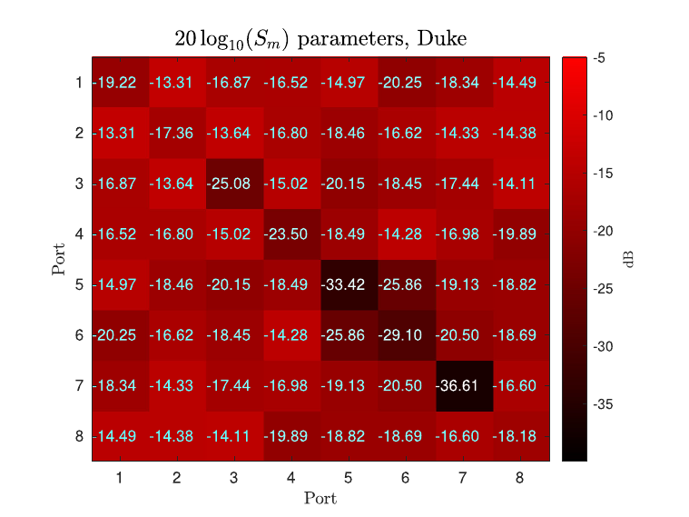

{kind=link}

Magnetic-resonance-based electrical property mapping using Global Maxwell Tomography with an 8-channel head coil at 7 Tesla: a simulation study
Global Maxwell Tomography (GMT) is a volumetric technique for noninvasive estimation of electrical properties (EP) from magnetic resonance measurements. This simulation study assessed GMT's performance with a realistic custom RF coil. We designed a transceive RF coil with 8 decoupled channels for 7T head imaging. We calculated the RF transmit field inside heterogeneous head models for different RF shimming approaches, and used them as input for GMT to reconstruct EP for all head voxels. We demonstrated that GMT can reliably reconstruct EP in realistic simulated scenarios using the proposed RF coil design. GMT could provide accurate estimations of tissue EP, which could be used as biomarkers and could enable patient-specific estimation of RF power deposition, which is an unsolved problem for ultra-high-field magnetic resonance imaging.
Read the paper{kind=link}
{kind=link}